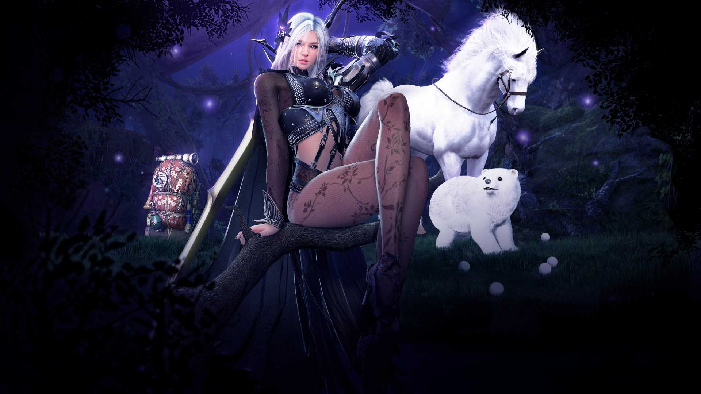

Página 2 Información Adicional

- En los siguientes enlaces podemos encontrar información de utilidad sobre la profesión de doma.
- Aquí se encuentran algunas de las recomendaciones para realizar de forma correcta esta profesión.
- Tenemos la posibilidad de consultar cualquier aspecto de doma.
- Información sobre Doma
- Guía para Doma
- Otra Guía para Doma